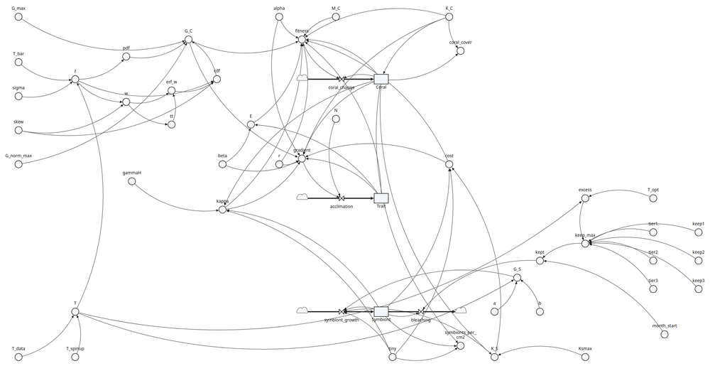

Coral acclimation to a warming ocean
How far can coral reefs keep up with warming seas by acclimating? A coral community, its symbiotic algae and the energy the corals invest in that partnership, forced by monthly sea temperatures from 1955 to 2100. When the sea is too warm the algae are expelled: bleaching.
It opens with the Great Barrier Reef under a moderate emissions scenario (RCP 4.5), after a 2000-year spin-up to equilibrium. Watch coral cover through the spin-up and then decline as bleaching becomes frequent late in the century.
Open in SimileFrom Raharinirina NA, Acevedo-Trejos E, Merico A (2022) Modelling the acclimation capacity of coral reefs to a warming ocean. PLoS Computational Biology 18(5): e1010099. The paper; the authors' code and data.
The model spec: coral.json; the temperatures and the region's constants: coral.parameters.json (the authors' data). Time in months, from January 1955.

Rebuilt in Simile from the paper and checked against the authors' own published runs: coral cover agrees to within about a percentage point over the whole run, and the trait to three or four figures. The symbionts differ only where a random bleaching event falls differently. The other two regions (South East Asia, the Caribbean) and scenarios can be run by loading their parameter files in Widgets › Parameters.